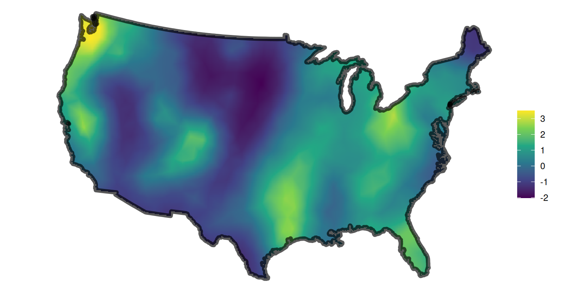

Packages used in this chapter
library(stelfi)
library(ggplot2)RTMB templatesstelfi fits its models using likelihoods written in C++ for TMB (Kristensen et al. (2016)). The RTMB package (Kristensen (2024)) lets you write the same kind of likelihood in R, while still getting automatic differentiation (fast and accurate gradients) and the Laplace approximation for random effects. This chapter gives simple RTMB versions of two of the stelfi likelihoods, a marked Hawkes process and a spatial LGCP, and checks that they give the same answers as stelfi. They are intended as a starting point if you want to see exactly what is being fitted or want to modify a model, for example to use a different self-excitement kernel, add covariates in a different way, or change a distribution.
Every RTMB model follows the same pattern:
getAll(), and marking any derived quantities you want standard errors for using ADREPORT();MakeADFun(), naming any random effects in random;nlminb(); andsdreport().See the RTMB introduction for more details.
The function below is the negative log-likelihood of the marked Hawkes process of Equation 3.1 (an unmarked process is obtained by setting all marks to 1). For a Hawkes process with intensity \(\lambda(t)\) observed over \([0, T]\) the log-likelihood is
\[\log L = \sum_{i=1}^n \log \lambda(\tau_i) - \int_0^T \lambda(t) dt.\]
The sum over past events in \(\lambda(\tau_i)\) is computed recursively (the term A below), which makes the likelihood fast to evaluate. The parameters are transformed so that they can take any value during optimisation: \(\mu\) and \(\beta\) are on the log scale, and \(\alpha\) is parameterised through the logit of the average branching ratio, which keeps \(\alpha \bar{m} < \beta\) (Chapter 3). As in stelfi, the integral is taken up to the last event.
marked_hawkes_nll <- function(params) {
getAll(data, params)
mu <- exp(log_mu)
beta <- exp(log_beta)
alpha <- plogis(logit_abratio) * beta / mean(marks)
n <- length(times)
## A[i] = sum over j < i of marks[j] * exp(-beta * (times[i] - times[j]))
A <- advector(numeric(n))
for (i in 2:n) {
A[i] <- exp(-beta * (times[i] - times[i - 1])) * (marks[i - 1] + A[i - 1])
}
## sum of log intensities at the events
loglik <- sum(log(mu + alpha * A))
## minus the integral of the intensity from 0 to the last event
loglik <- loglik - mu * times[n] - (alpha / beta) * (sum(marks) - marks[n] - A[n])
ADREPORT(mu)
ADREPORT(alpha)
ADREPORT(beta)
-loglik
}This is applied to the Canterbury earthquakes with marks \(\text{exp}(\text{magnitude} - 3)\), prepared exactly as in Section 3.3.
data(nz_earthquakes, package = "stelfi")
eq <- data.frame(time = nz_earthquakes$origintime, magnitude = nz_earthquakes$magnitude)
eq$days <- as.numeric(difftime(eq$time, min(eq$time), units = "days"))
set.seed(1)
eq$days <- eq$days + runif(nrow(eq), 0, 1 / (24 * 60))
eq <- eq[order(eq$days), ]
eq$days <- eq$days - eq$days[1]
eq$mark <- exp(eq$magnitude - 3) Estimate Std. Error
mu 0.3166995 0.01831556
alpha 1.5253057 0.09100412
beta 3.1914302 0.19620356The same model fitted using stelfi:
Estimate Std. Error
mu 0.3165789 0.01831468
alpha 1.5257779 0.09103272
beta 3.1923044 0.19626381The estimates agree (up to small differences due to the optimiser).
Some ideas for modifying the template: replace the exponential kernel with another kernel (you will need its integral, and for most kernels the recursive calculation of A no longer works, so the sum has to be over all pairs of events, which is slower); let the background vary with time (as in Section 2.5); or let the effect of the mark be estimated, e.g., using marks^gamma with \(\gamma\) an additional parameter.
Given events \(s_1, ..., s_n\) in a study region \(D\), the log-likelihood of a Poisson process with intensity \(\lambda(s) = \text{exp}(\beta_0 + G(s))\), conditional on the random field, is
\[\log L = \sum_{j=1}^n \log \lambda(s_j) - \int_D \lambda(s)\,ds.\]
The field is represented on the mesh (Chapter 5) as \(G(s) = \sum_i \psi_i(s) x_i\), where the \(\psi_i\) are piecewise linear basis functions and the values at the mesh nodes \(\boldsymbol{x}\) have a multivariate normal distribution with mean zero and sparse precision matrix
\[\boldsymbol{Q} = \tau^2(\kappa^4 \boldsymbol{C} + 2\kappa^2 \boldsymbol{G} + \boldsymbol{G}\boldsymbol{C}^{-1}\boldsymbol{G}),\]
where \(\boldsymbol{C}\) and \(\boldsymbol{G}\) are matrices that depend only on the mesh (returned by fmesher::fm_fem()). Two more ingredients are needed:
fmesher::fm_basis()); andfmesher::fm_int()), so that the integral over the study region is approximated by \(\int_D \lambda(s)ds \approx \sum_k w_k \lambda(u_k)\). The weights sum to the area of \(D\).The random field \(\boldsymbol{x}\) is a random effect: it is integrated out of the likelihood using the Laplace approximation by naming it in the random argument of MakeADFun().
The sasquatch data are used, prepared exactly as in Section 6.3.1.
data("sasquatch", package = "stelfi")
sf::sf_use_s2(FALSE)
us <- maps::map("usa", fill = TRUE, plot = FALSE) |>
sf::st_as_sf() |>
sf::st_make_valid() |>
sf::st_transform(crs = 5070)
us_km <- sf::st_sf(geometry = sf::st_union(sf::st_geometry(us)) / 1000)
sf::st_crs(us_km) <- NA ## planar km, matching the mesh
locs <- sf::st_transform(sasquatch, crs = 5070) |>
sf::st_coordinates() |>
as.data.frame()
names(locs) <- c("x", "y")
locs <- locs / 1000
smesh <- fmesher::fm_mesh_2d(loc = locs[, 1:2], max.edge = c(200, 500), cutoff = 100)The data needed by the template are the three mesh matrices, the projection matrices for the events and for the integration points, and the integration weights.
fem <- fmesher::fm_fem(smesh, order = 2)
as_T <- function(M) as(as(M, "generalMatrix"), "TsparseMatrix") ## sparse format used by RTMB
ips <- fmesher::fm_int(smesh, samplers = us_km)
data <- list(C = as_T(fem$c0), G1 = as_T(fem$g1), G2 = as_T(fem$g2),
A_pts = fmesher::fm_basis(smesh, loc = as.matrix(locs)),
A_ips = fmesher::fm_basis(smesh, loc = sf::st_coordinates(ips)[, 1:2]),
w = ips$weight)lgcp_nll <- function(params) {
getAll(data, params)
tau <- exp(log_tau)
kappa <- exp(log_kappa)
## precision matrix of the field at the mesh nodes
Q <- tau^2 * (kappa^4 * C + 2 * kappa^2 * G1 + G2)
## the random field: a multivariate normal with precision Q
nll <- -dgmrf(x, 0, Q, log = TRUE)
## log intensity at the events and at the integration points
eta_pts <- beta + A_pts %*% x
eta_ips <- beta + A_ips %*% x
## minus (sum of log intensity at events - integral of the intensity)
nll <- nll - sum(eta_pts) + sum(w * exp(eta_ips))
## range and standard deviation of the field
range <- sqrt(8) / kappa
stdev <- 1 / sqrt(4 * pi * kappa^2 * tau^2)
ADREPORT(beta)
ADREPORT(range)
ADREPORT(stdev)
nll
} Estimate Std. Error
beta -9.877046 0.4959888
range 1155.765168 244.2988155
stdev 1.426333 0.2419242The same model fitted using stelfi:
Estimate Std. Error
beta -9.937127 0.3865464
range 813.993038 147.9889397
stdev 1.419026 0.1880638The estimates are close, but not identical, because the two implementations approximate the likelihood slightly differently: stelfi counts the events closest to each mesh node and gives each node the area of the study region closest to it, whereas the template uses the exact event locations and integration points. The estimated field (the values of the random effects at the optimum) can be extracted from the sdreport() and plotted as before.

Some ideas for modifying the template:
beta with a vector of coefficients and the intercept in eta_pts and eta_ips with a design matrix times that vector (e.g., X_pts %*% beta), with the covariates evaluated at the events and at the integration points;eta_pts and eta_ips as an offset; andA_pts %*% x), to give a marked LGCP (Chapter 7).